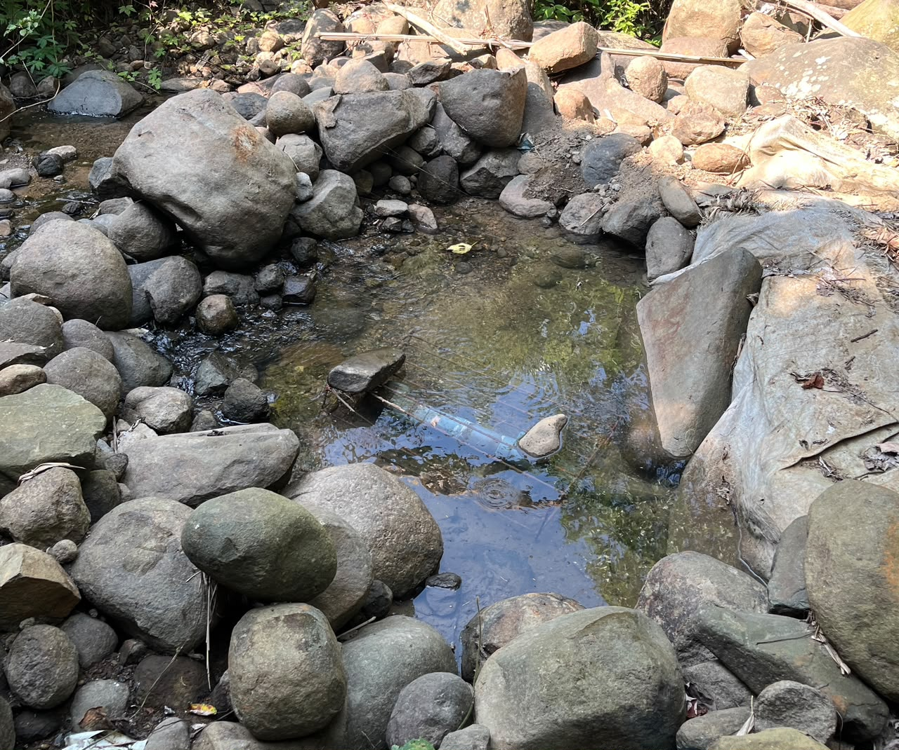

Suasana Desa Cipurwasari

Pusat penyelenggaraan pemerintahan desa yang memberikan pelayanan administrasi, informasi, dan berbagai layanan publik bagi masyarakat Desa Cipurwasari.

Hamparan sawah yang membentang luas dengan latar perbukitan menjadi salah satu potensi alam dan sumber mata pencaharian masyarakat Desa Cipurwasari.

Pelayanan kesehatan ibu, bayi, balita, serta pemantauan tumbuh kembang masyarakat melalui kegiatan Posyandu yang rutin dilaksanakan.

Sekolah dasar negeri yang menjadi pusat pendidikan dasar bagi anak-anak di Desa Cipurwasari serta berperan dalam membentuk generasi yang cerdas, berkarakter, dan berprestasi.

Monumen bersejarah yang mengenang perjuangan para pejuang Indonesia yang gugur dalam Agresi Militer Belanda II di kawasan Gunung Goong, sekaligus menjadi simbol patriotisme masyarakat Desa Cipurwasari.

Sumber Air Bersih Desa Cipurwasari merupakan mata air alami yang menjadi salah satu sumber kehidupan masyarakat. Airnya dimanfaatkan untuk berbagai kebutuhan sehari-hari, sehingga kebersihan dan kelestariannya perlu dijaga bersama agar tetap memberikan manfaat bagi generasi mendatang.

Destinasi wisata alam di Desa Cipurwasari yang menawarkan panorama perbukitan, udara sejuk, serta pemandangan alam yang asri dan menenangkan.

Program pengabdian mahasiswa Universitas Buana Perjuangan Karawang yang berfokus pada pemberdayaan masyarakat melalui pengelolaan sampah berbasis lingkungan berkelanjutan di Desa Cipurwasari.